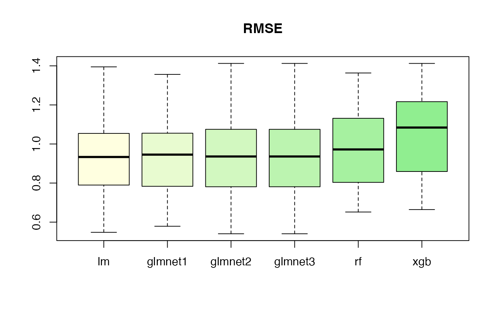
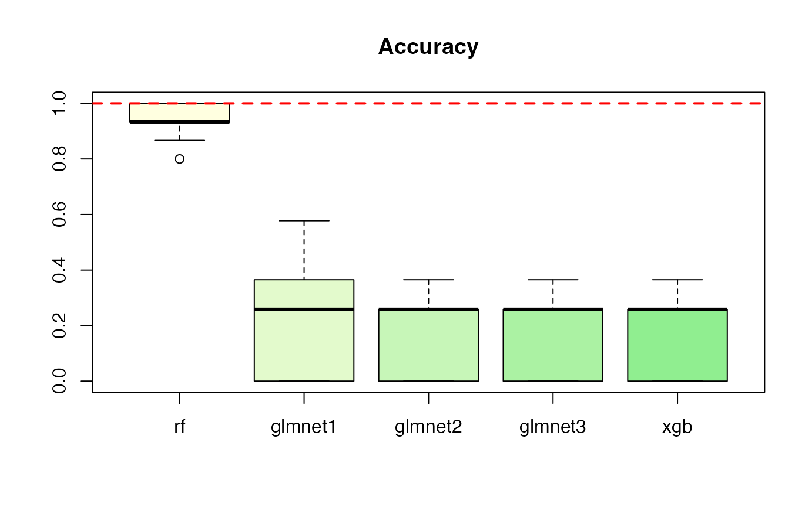

(n_folds <- 10)## [1] 10
(repeats <- 5)## [1] 5## Loading required package: Matrix## Loaded glmnet 4.1-7## randomForest 4.7-1.1## Type rfNews() to see new features/changes/bug fixes.## [,1] [,2] [,3] [,4] [,5]
## [1,] -0.56047565 -0.71040656 2.1988103 -0.7152422 -0.07355602
## [2,] -0.23017749 0.25688371 1.3124130 -0.7526890 -1.16865142
## [3,] 1.55870831 -0.24669188 -0.2651451 -0.9385387 -0.63474826
## [4,] 0.07050839 -0.34754260 0.5431941 -1.0525133 -0.02884155
## [5,] 0.12928774 -0.95161857 -0.4143399 -0.4371595 0.67069597
## [6,] 1.71506499 -0.04502772 -0.4762469 0.3311792 -1.65054654## [1] -0.60189285 -0.99369859 1.02678506 0.75106130 -1.50916654 -0.09514745
# linear model example, with validation set
(cv_lm <- crossvalidation::crossval_ml(x = X, y = y, k = n_folds,
repeats = repeats, show_progress = FALSE))## $folds
## repeat_1 repeat_2 repeat_3 repeat_4 repeat_5
## fold_1 1.0542114 0.7897704 0.9992311 0.6845160 0.7373609
## fold_2 1.1910307 0.6895550 0.8842108 0.9329906 1.0339671
## fold_3 0.6044163 0.7879128 1.0418998 0.8196069 0.7247805
## fold_4 0.6600516 0.9009428 1.1458603 1.3948270 0.9627625
## fold_5 0.7694007 0.9338670 0.8597707 1.2620183 1.2759860
## fold_6 1.0454450 0.9576229 0.8009186 0.9952590 0.8341030
## fold_7 1.1906164 1.1002922 1.1616642 0.7977085 0.8929249
## fold_8 0.9583041 0.8032244 0.6787972 1.2446733 0.8261299
## fold_9 1.0491421 1.0143186 1.1282459 0.6324340 1.0717759
## fold_10 0.7129408 1.2937050 0.8229314 0.5477204 1.0148143
##
## $mean
## [1] 0.9343332
##
## $sd
## [1] 0.2011818
##
## $median
## [1] 0.9334288
##
## $summary
## repeat_1 repeat_2 repeat_3 repeat_4
## Min. :0.6044 Min. :0.6896 Min. :0.6788 Min. :0.5477
## 1st Qu.:0.7271 1st Qu.:0.7931 1st Qu.:0.8321 1st Qu.:0.7128
## Median :1.0019 Median :0.9174 Median :0.9417 Median :0.8763
## Mean :0.9236 Mean :0.9271 Mean :0.9524 Mean :0.9312
## 3rd Qu.:1.0529 3rd Qu.:1.0001 3rd Qu.:1.1067 3rd Qu.:1.1823
## Max. :1.1910 Max. :1.2937 Max. :1.1617 Max. :1.3948
## repeat_5
## Min. :0.7248
## 1st Qu.:0.8281
## Median :0.9278
## Mean :0.9375
## 3rd Qu.:1.0292
## Max. :1.2760glmnet
# glmnet example -----
# fit glmnet, with alpha = 1, lambda = 0.1
(cv_glmnet <- crossvalidation::crossval_ml(x = X, y = y, k = n_folds,
repeats = repeats,
show_progress = FALSE,
fit_func = glmnet, predict_func = predict,
packages = c("glmnet", "Matrix"),
fit_params = list(alpha = 0, lambda = 0.01)))## $folds
## repeat_1 repeat_2 repeat_3 repeat_4 repeat_5
## fold_1 1.0544934 0.7852671 1.0158867 0.6811932 0.7354198
## fold_2 1.1851752 0.6937148 0.8982638 0.9311705 1.0750764
## fold_3 0.6300267 0.7810649 1.0389206 0.8152113 0.7431641
## fold_4 0.6508262 0.8969593 1.1778034 1.4124621 0.9552528
## fold_5 0.7710576 0.9408783 0.8696077 1.2656185 1.2980023
## fold_6 1.0742275 0.9617951 0.7802465 0.9990810 0.8325598
## fold_7 1.1932674 1.1200887 1.1552310 0.8026574 0.8720067
## fold_8 0.9495243 0.8018591 0.6791356 1.2340454 0.8209432
## fold_9 1.0428181 1.0093679 1.1226855 0.6325674 1.0759311
## fold_10 0.6900148 1.2841895 0.8147244 0.5403640 1.0140428
##
## $mean
## [1] 0.9361178
##
## $sd
## [1] 0.2044018
##
## $median
## [1] 0.9360244
##
## $summary
## repeat_1 repeat_2 repeat_3 repeat_4
## Min. :0.6300 Min. :0.6937 Min. :0.6791 Min. :0.5404
## 1st Qu.:0.7103 1st Qu.:0.7894 1st Qu.:0.8284 1st Qu.:0.7116
## Median :0.9962 Median :0.9189 Median :0.9571 Median :0.8732
## Mean :0.9241 Mean :0.9275 Mean :0.9553 Mean :0.9314
## 3rd Qu.:1.0693 3rd Qu.:0.9975 3rd Qu.:1.1017 3rd Qu.:1.1753
## Max. :1.1933 Max. :1.2842 Max. :1.1778 Max. :1.4125
## repeat_5
## Min. :0.7354
## 1st Qu.:0.8238
## Median :0.9136
## Mean :0.9422
## 3rd Qu.:1.0598
## Max. :1.2980
# randomForest example -----
# fit randomForest with mtry = 4, with validation set
(
cv_rf <- crossvalidation::crossval_ml(
x = X,
y = y,
k = n_folds,
repeats = repeats,
show_progress = FALSE,
fit_func = randomForest::randomForest,
predict_func = predict,
packages = "randomForest",
fit_params = list(mtry = 4)
)
)## $folds
## repeat_1 repeat_2 repeat_3 repeat_4 repeat_5
## fold_1 1.1332846 1.2277228 1.1315271 0.6650800 0.7515580
## fold_2 1.0497855 0.8034548 1.0659802 0.9449743 1.1781893
## fold_3 0.6517934 0.9413202 1.1037983 0.7386220 0.9417872
## fold_4 0.7190053 1.0198804 1.2012089 1.2332684 0.9567951
## fold_5 0.7880895 0.9445117 0.8710223 1.3057252 1.3635276
## fold_6 0.9554014 0.9506709 0.8695866 0.9885748 0.7633506
## fold_7 1.2326817 1.2605827 0.9720872 0.9811717 0.8619792
## fold_8 0.9990442 0.9428910 0.8007982 1.2946520 0.9720992
## fold_9 1.2831057 1.0422664 1.0720562 0.6772533 1.0301169
## fold_10 0.7483974 1.1963114 0.7921345 0.6535830 0.9880932
##
## $mean
## [1] 0.981216
##
## $sd
## [1] 0.1919118
##
## $median
## [1] 0.9720932
##
## $summary
## repeat_1 repeat_2 repeat_3 repeat_4
## Min. :0.6518 Min. :0.8035 Min. :0.7921 Min. :0.6536
## 1st Qu.:0.7583 1st Qu.:0.9433 1st Qu.:0.8699 1st Qu.:0.6926
## Median :0.9772 Median :0.9853 Median :1.0190 Median :0.9631
## Mean :0.9561 Mean :1.0330 Mean :0.9880 Mean :0.9483
## 3rd Qu.:1.1124 3rd Qu.:1.1578 3rd Qu.:1.0959 3rd Qu.:1.1721
## Max. :1.2831 Max. :1.2606 Max. :1.2012 Max. :1.3057
## repeat_5
## Min. :0.7516
## 1st Qu.:0.8819
## Median :0.9644
## Mean :0.9807
## 3rd Qu.:1.0196
## Max. :1.3635xgboost
# xgboost example -----
# The response and covariates are named 'label' and 'data'
# So, we do this:
f_xgboost <- function(x, y, ...) xgboost::xgboost(data = x, label = y, ...)
# fit xgboost with nrounds = 10, with validation set
(
cv_xgboost <-
crossvalidation::crossval_ml(
x = X,
y = y,
k = n_folds,
repeats = repeats,
show_progress = FALSE,
fit_func = f_xgboost,
predict_func = predict,
#packages = "xgboost",
fit_params = list(nrounds = 10,
verbose = FALSE)
)
)## $folds
## repeat_1 repeat_2 repeat_3 repeat_4 repeat_5
## fold_1 1.0938020 1.3517331 1.2457264 0.7958320 0.6642957
## fold_2 1.0470703 0.8346641 1.2422883 0.9760163 1.1254416
## fold_3 0.7454524 1.1091904 1.2228745 0.7805854 1.0822729
## fold_4 0.9075405 1.1653269 1.2243849 1.2997476 0.9621598
## fold_5 0.7526928 0.8746423 0.8637247 1.4123794 1.2568507
## fold_6 1.1722159 1.0183700 1.0142121 0.9346081 0.8210917
## fold_7 1.2629796 1.3929470 0.8326344 1.0870722 0.8370033
## fold_8 1.2037360 0.9501611 1.0522420 1.2026870 1.0860880
## fold_9 1.2538336 1.3457855 1.1142671 0.7735172 1.0925358
## fold_10 0.7653608 1.2166758 0.8591771 0.7830750 1.1834390
##
## $mean
## [1] 1.045848
##
## $sd
## [1] 0.1991773
##
## $median
## [1] 1.08418
##
## $summary
## repeat_1 repeat_2 repeat_3 repeat_4
## Min. :0.7455 Min. :0.8347 Min. :0.8326 Min. :0.7735
## 1st Qu.:0.8009 1st Qu.:0.9672 1st Qu.:0.9013 1st Qu.:0.7863
## Median :1.0704 Median :1.1373 Median :1.0833 Median :0.9553
## Mean :1.0205 Mean :1.1259 Mean :1.0672 Mean :1.0046
## 3rd Qu.:1.1959 3rd Qu.:1.3135 3rd Qu.:1.2240 3rd Qu.:1.1738
## Max. :1.2630 Max. :1.3929 Max. :1.2457 Max. :1.4124
## repeat_5
## Min. :0.6643
## 1st Qu.:0.8683
## Median :1.0842
## Mean :1.0111
## 3rd Qu.:1.1172
## Max. :1.2569glmnet
# glmnet example -----
# fit glmnet, with alpha = 1, lambda = 0.1
cv_glmnet1 <- crossvalidation::crossval_ml(x = X, y = y, k = n_folds,
repeats = repeats,
show_progress = FALSE,
fit_func = glmnet,
predict_func = predict.glmnet,
packages = c("glmnet", "Matrix"),
fit_params = list(alpha = 0.5,
lambda = 0.1,
family = "gaussian"))
# fit glmnet, with alpha = 0, lambda = 0.01
cv_glmnet2 <- crossvalidation::crossval_ml(x = X, y = y, k = n_folds, repeats = repeats, show_progress = FALSE,
fit_func = glmnet::glmnet, predict_func = predict.glmnet,
packages = c("glmnet", "Matrix"), fit_params = list(alpha = 0, lambda = 0.01, family = "gaussian"))
# fit glmnet, with alpha = 0, lambda = 0.01, with validation set
cv_glmnet3 <- crossvalidation::crossval_ml(x = X, y = y, k = n_folds, repeats = repeats, show_progress = FALSE,
fit_func = glmnet::glmnet, predict_func = predict.glmnet,
packages = c("glmnet", "Matrix"), fit_params = list(alpha = 0, lambda = 0.01))
(samples <- crossvalidation::create_samples(cv_lm, cv_glmnet1,
cv_glmnet2, cv_glmnet3,
cv_rf, cv_xgboost,
model_names = c("lm", "glmnet1", "glmnet2",
"glmnet3", "rf", "xgb")))## $lm
## [1] 1.0542114 1.1910307 0.6044163 0.6600516 0.7694007 1.0454450 1.1906164
## [8] 0.9583041 1.0491421 0.7129408 0.7897704 0.6895550 0.7879128 0.9009428
## [15] 0.9338670 0.9576229 1.1002922 0.8032244 1.0143186 1.2937050 0.9992311
## [22] 0.8842108 1.0418998 1.1458603 0.8597707 0.8009186 1.1616642 0.6787972
## [29] 1.1282459 0.8229314 0.6845160 0.9329906 0.8196069 1.3948270 1.2620183
## [36] 0.9952590 0.7977085 1.2446733 0.6324340 0.5477204 0.7373609 1.0339671
## [43] 0.7247805 0.9627625 1.2759860 0.8341030 0.8929249 0.8261299 1.0717759
## [50] 1.0148143
##
## $glmnet1
## [1] 1.0540565 1.1381839 0.6405422 0.6792892 0.7801688 1.0679022 1.1318917
## [8] 0.9547997 1.0552364 0.6560413 0.7991540 0.7197517 0.8177878 0.8567688
## [15] 0.9714204 0.9859820 1.0580432 0.7520804 1.0064672 1.2179694 0.9779052
## [22] 0.8913311 1.0280474 1.1730863 0.9189716 0.8394041 1.1218028 0.6624757
## [29] 1.1280604 0.7980074 0.6477765 0.9363302 0.7993982 1.3562792 1.1892933
## [36] 0.9966571 0.7919034 1.2334429 0.6890270 0.5788176 0.7792970 1.0053343
## [43] 0.7581101 0.9640003 1.2866884 0.8262688 0.8928464 0.7833132 1.0166275
## [50] 0.9971977
##
## $glmnet2
## [1] 1.0544934 1.1851752 0.6300267 0.6508262 0.7710576 1.0742275 1.1932674
## [8] 0.9495243 1.0428181 0.6900148 0.7852671 0.6937148 0.7810649 0.8969593
## [15] 0.9408783 0.9617951 1.1200887 0.8018591 1.0093679 1.2841895 1.0158867
## [22] 0.8982638 1.0389206 1.1778034 0.8696077 0.7802465 1.1552310 0.6791356
## [29] 1.1226855 0.8147244 0.6811932 0.9311705 0.8152113 1.4124621 1.2656185
## [36] 0.9990810 0.8026574 1.2340454 0.6325674 0.5403640 0.7354198 1.0750764
## [43] 0.7431641 0.9552528 1.2980023 0.8325598 0.8720067 0.8209432 1.0759311
## [50] 1.0140428
##
## $glmnet3
## [1] 1.0544934 1.1851752 0.6300267 0.6508262 0.7710576 1.0742275 1.1932674
## [8] 0.9495243 1.0428181 0.6900148 0.7852671 0.6937148 0.7810649 0.8969593
## [15] 0.9408783 0.9617951 1.1200887 0.8018591 1.0093679 1.2841895 1.0158867
## [22] 0.8982638 1.0389206 1.1778034 0.8696077 0.7802465 1.1552310 0.6791356
## [29] 1.1226855 0.8147244 0.6811932 0.9311705 0.8152113 1.4124621 1.2656185
## [36] 0.9990810 0.8026574 1.2340454 0.6325674 0.5403640 0.7354198 1.0750764
## [43] 0.7431641 0.9552528 1.2980023 0.8325598 0.8720067 0.8209432 1.0759311
## [50] 1.0140428
##
## $rf
## [1] 1.1332846 1.0497855 0.6517934 0.7190053 0.7880895 0.9554014 1.2326817
## [8] 0.9990442 1.2831057 0.7483974 1.2277228 0.8034548 0.9413202 1.0198804
## [15] 0.9445117 0.9506709 1.2605827 0.9428910 1.0422664 1.1963114 1.1315271
## [22] 1.0659802 1.1037983 1.2012089 0.8710223 0.8695866 0.9720872 0.8007982
## [29] 1.0720562 0.7921345 0.6650800 0.9449743 0.7386220 1.2332684 1.3057252
## [36] 0.9885748 0.9811717 1.2946520 0.6772533 0.6535830 0.7515580 1.1781893
## [43] 0.9417872 0.9567951 1.3635276 0.7633506 0.8619792 0.9720992 1.0301169
## [50] 0.9880932
##
## $xgb
## [1] 1.0938020 1.0470703 0.7454524 0.9075405 0.7526928 1.1722159 1.2629796
## [8] 1.2037360 1.2538336 0.7653608 1.3517331 0.8346641 1.1091904 1.1653269
## [15] 0.8746423 1.0183700 1.3929470 0.9501611 1.3457855 1.2166758 1.2457264
## [22] 1.2422883 1.2228745 1.2243849 0.8637247 1.0142121 0.8326344 1.0522420
## [29] 1.1142671 0.8591771 0.7958320 0.9760163 0.7805854 1.2997476 1.4123794
## [36] 0.9346081 1.0870722 1.2026870 0.7735172 0.7830750 0.6642957 1.1254416
## [43] 1.0822729 0.9621598 1.2568507 0.8210917 0.8370033 1.0860880 1.0925358
## [50] 1.1834390
##
## attr(,"class")
## [1] "cvsamples" "list"
boxplot(samples, main = "RMSE")
data(iris)## Sepal.Length Sepal.Width Petal.Length Petal.Width
## [1,] 5.1 3.5 1.4 0.2
## [2,] 4.9 3.0 1.4 0.2
## [3,] 4.7 3.2 1.3 0.2
## [4,] 4.6 3.1 1.5 0.2
## [5,] 5.0 3.6 1.4 0.2
## [6,] 5.4 3.9 1.7 0.4
y <- factor(as.numeric(iris$Species))
print(head(y))## [1] 1 1 1 1 1 1
## Levels: 1 2 3glmnet
# glmnet example -----
predict_glmnet <- function(object, newx) {
as.numeric(predict(object = object,
newx = newx,
type = "class"))
}
(cv_glmnet_1 <- crossvalidation::crossval_ml(x = X,
y = as.integer(iris$Species),
k = n_folds, repeats = repeats, show_progress = FALSE,
fit_func = glmnet, predict_func = predict_glmnet,
packages = c("glmnet", "Matrix"), fit_params = list(alpha = 0.5, lambda = 0.1, family = "multinomial"))) # better to use `nlambda`## $folds
## repeat_1 repeat_2 repeat_3 repeat_4 repeat_5
## fold_1 0.0000000 0.3651484 0.2581989 0.4472136 0.2581989
## fold_2 0.4472136 0.3651484 0.3651484 0.3651484 0.2581989
## fold_3 0.3651484 0.0000000 0.2581989 0.0000000 0.2581989
## fold_4 0.0000000 0.3651484 0.4472136 0.3651484 0.3651484
## fold_5 0.2581989 0.0000000 0.2581989 0.2581989 0.0000000
## fold_6 0.5163978 0.3651484 0.3651484 0.0000000 0.3651484
## fold_7 0.2581989 0.2581989 0.2581989 0.2581989 0.0000000
## fold_8 0.0000000 0.2581989 0.0000000 0.5773503 0.2581989
## fold_9 0.0000000 0.2581989 0.4472136 0.0000000 0.3651484
## fold_10 0.4472136 0.2581989 0.0000000 0.0000000 0.4472136
##
## $mean
## [1] 0.2457998
##
## $sd
## [1] 0.1717728
##
## $median
## [1] 0.2581989
##
## $summary
## repeat_1 repeat_2 repeat_3 repeat_4
## Min. :0.0000 Min. :0.0000 Min. :0.0000 Min. :0.0000
## 1st Qu.:0.0000 1st Qu.:0.2582 1st Qu.:0.2582 1st Qu.:0.0000
## Median :0.2582 Median :0.2582 Median :0.2582 Median :0.2582
## Mean :0.2292 Mean :0.2493 Mean :0.2658 Mean :0.2271
## 3rd Qu.:0.4267 3rd Qu.:0.3651 3rd Qu.:0.3651 3rd Qu.:0.3651
## Max. :0.5164 Max. :0.3651 Max. :0.4472 Max. :0.5774
## repeat_5
## Min. :0.0000
## 1st Qu.:0.2582
## Median :0.2582
## Mean :0.2575
## 3rd Qu.:0.3651
## Max. :0.4472
(cv_glmnet_2 <- crossvalidation::crossval_ml(x = X,
y = as.integer(iris$Species),
k = n_folds, repeats = repeats, show_progress = FALSE,
fit_func = glmnet::glmnet, predict_func = predict_glmnet,
packages = c("glmnet", "Matrix"), fit_params = list(alpha = 0, lambda = 0.01, family = "multinomial")))## $folds
## repeat_1 repeat_2 repeat_3 repeat_4 repeat_5
## fold_1 0.0000000 0.2581989 0.0000000 0.3651484 0.2581989
## fold_2 0.0000000 0.3651484 0.2581989 0.3651484 0.2581989
## fold_3 0.2581989 0.0000000 0.2581989 0.0000000 0.0000000
## fold_4 0.0000000 0.2581989 0.0000000 0.2581989 0.2581989
## fold_5 0.2581989 0.0000000 0.2581989 0.0000000 0.0000000
## fold_6 0.3651484 0.2581989 0.2581989 0.0000000 0.3651484
## fold_7 0.2581989 0.0000000 0.2581989 0.0000000 0.0000000
## fold_8 0.0000000 0.3651484 0.0000000 0.3651484 0.0000000
## fold_9 0.2581989 0.2581989 0.3651484 0.0000000 0.0000000
## fold_10 0.3651484 0.0000000 0.0000000 0.0000000 0.3651484
##
## $mean
## [1] 0.1608173
##
## $sd
## [1] 0.1547583
##
## $median
## [1] 0.2581989
##
## $summary
## repeat_1 repeat_2 repeat_3 repeat_4
## Min. :0.0000 Min. :0.0000 Min. :0.0000 Min. :0.0000
## 1st Qu.:0.0000 1st Qu.:0.0000 1st Qu.:0.0000 1st Qu.:0.0000
## Median :0.2582 Median :0.2582 Median :0.2582 Median :0.0000
## Mean :0.1763 Mean :0.1763 Mean :0.1656 Mean :0.1354
## 3rd Qu.:0.2582 3rd Qu.:0.2582 3rd Qu.:0.2582 3rd Qu.:0.3384
## Max. :0.3651 Max. :0.3651 Max. :0.3651 Max. :0.3651
## repeat_5
## Min. :0.0000
## 1st Qu.:0.0000
## Median :0.1291
## Mean :0.1505
## 3rd Qu.:0.2582
## Max. :0.3651
(cv_glmnet_3 <- crossvalidation::crossval_ml(x = X, y = as.integer(iris$Species) , k = n_folds, repeats = repeats, show_progress = FALSE,
fit_func = glmnet::glmnet, predict_func = predict_glmnet,
packages = c("glmnet", "Matrix"), fit_params = list(alpha = 1, lambda = 0.01, family = "multinomial")))## $folds
## repeat_1 repeat_2 repeat_3 repeat_4 repeat_5
## fold_1 0.0000000 0.2581989 0.0000000 0.3651484 0.2581989
## fold_2 0.0000000 0.0000000 0.2581989 0.3651484 0.2581989
## fold_3 0.2581989 0.0000000 0.2581989 0.0000000 0.0000000
## fold_4 0.0000000 0.2581989 0.0000000 0.2581989 0.2581989
## fold_5 0.2581989 0.0000000 0.2581989 0.0000000 0.0000000
## fold_6 0.2581989 0.2581989 0.2581989 0.0000000 0.2581989
## fold_7 0.2581989 0.0000000 0.2581989 0.0000000 0.0000000
## fold_8 0.0000000 0.2581989 0.0000000 0.3651484 0.0000000
## fold_9 0.2581989 0.2581989 0.3651484 0.0000000 0.0000000
## fold_10 0.3651484 0.0000000 0.0000000 0.0000000 0.3651484
##
## $mean
## [1] 0.1470974
##
## $sd
## [1] 0.1464862
##
## $median
## [1] 0.2581989
##
## $summary
## repeat_1 repeat_2 repeat_3 repeat_4
## Min. :0.0000 Min. :0.0000 Min. :0.0000 Min. :0.0000
## 1st Qu.:0.0000 1st Qu.:0.0000 1st Qu.:0.0000 1st Qu.:0.0000
## Median :0.2582 Median :0.1291 Median :0.2582 Median :0.0000
## Mean :0.1656 Mean :0.1291 Mean :0.1656 Mean :0.1354
## 3rd Qu.:0.2582 3rd Qu.:0.2582 3rd Qu.:0.2582 3rd Qu.:0.3384
## Max. :0.3651 Max. :0.2582 Max. :0.3651 Max. :0.3651
## repeat_5
## Min. :0.0000
## 1st Qu.:0.0000
## Median :0.1291
## Mean :0.1398
## 3rd Qu.:0.2582
## Max. :0.3651
# randomForest example -----
# fit randomForest with mtry = 4, with validation set
(
cv_rf <- crossvalidation::crossval_ml(
x = X,
y = y,
k = n_folds,
repeats = repeats,
show_progress = FALSE,
fit_func = randomForest::randomForest,
predict_func = predict,
#packages = "randomForest",
fit_params = list(mtry = 2L)
)
)## $folds
## repeat_1 repeat_2 repeat_3 repeat_4 repeat_5
## fold_1 1.0000000 1.0000000 1.0000000 0.8666667 0.9333333
## fold_2 0.9333333 0.9333333 0.9333333 1.0000000 1.0000000
## fold_3 1.0000000 1.0000000 0.9333333 1.0000000 1.0000000
## fold_4 0.9333333 1.0000000 0.8666667 1.0000000 0.9333333
## fold_5 0.9333333 0.8666667 0.9333333 0.9333333 0.9333333
## fold_6 0.9333333 0.9333333 1.0000000 1.0000000 0.9333333
## fold_7 1.0000000 0.9333333 1.0000000 0.8666667 1.0000000
## fold_8 1.0000000 0.9333333 1.0000000 0.8000000 0.8666667
## fold_9 0.9333333 0.9333333 0.9333333 1.0000000 0.8666667
## fold_10 0.9333333 1.0000000 1.0000000 1.0000000 1.0000000
##
## $mean
## [1] 0.9533333
##
## $sd
## [1] 0.05084323
##
## $median
## [1] 0.9333333
##
## $summary
## repeat_1 repeat_2 repeat_3 repeat_4
## Min. :0.9333 Min. :0.8667 Min. :0.8667 Min. :0.8000
## 1st Qu.:0.9333 1st Qu.:0.9333 1st Qu.:0.9333 1st Qu.:0.8833
## Median :0.9333 Median :0.9333 Median :0.9667 Median :1.0000
## Mean :0.9600 Mean :0.9533 Mean :0.9600 Mean :0.9467
## 3rd Qu.:1.0000 3rd Qu.:1.0000 3rd Qu.:1.0000 3rd Qu.:1.0000
## Max. :1.0000 Max. :1.0000 Max. :1.0000 Max. :1.0000
## repeat_5
## Min. :0.8667
## 1st Qu.:0.9333
## Median :0.9333
## Mean :0.9467
## 3rd Qu.:1.0000
## Max. :1.0000
y <- as.integer(iris$Species) - 1
print(y)## [1] 0 0 0 0 0 0 0 0 0 0 0 0 0 0 0 0 0 0 0 0 0 0 0 0 0 0 0 0 0 0 0 0 0 0 0 0 0
## [38] 0 0 0 0 0 0 0 0 0 0 0 0 0 1 1 1 1 1 1 1 1 1 1 1 1 1 1 1 1 1 1 1 1 1 1 1 1
## [75] 1 1 1 1 1 1 1 1 1 1 1 1 1 1 1 1 1 1 1 1 1 1 1 1 1 1 2 2 2 2 2 2 2 2 2 2 2
## [112] 2 2 2 2 2 2 2 2 2 2 2 2 2 2 2 2 2 2 2 2 2 2 2 2 2 2 2 2 2 2 2 2 2 2 2 2 2
## [149] 2 2
# xgboost example -----
# fit xgboost with nrounds = 10, with validation set
f_xgboost <- function(x, y, ...) {
#xgb_train = xgb.DMatrix(data=x, label=y)
xgboost::xgboost(data = x, label = y, ...)
}
(cv_xgboost <- crossvalidation::crossval_ml(x = X, y = y, k = n_folds, repeats = repeats, fit_func = f_xgboost, predict_func = predict,
packages = "xgboost",
show_progress = FALSE,
fit_params = list(nrounds = 50L,
verbose = FALSE,
params = list(max_depth = 3L,
eta = 0.1,
subsample = 0.8,
colsample_bytree = 0.8,
objective = "multi:softmax",
num_class = 3L))))## $folds
## repeat_1 repeat_2 repeat_3 repeat_4 repeat_5
## fold_1 0.0000000 0.2581989 0.0000000 0.3651484 0.2581989
## fold_2 0.3651484 0.2581989 0.2581989 0.3651484 0.2581989
## fold_3 0.0000000 0.0000000 0.2581989 0.0000000 0.0000000
## fold_4 0.0000000 0.2581989 0.0000000 0.2581989 0.2581989
## fold_5 0.2581989 0.0000000 0.0000000 0.0000000 0.0000000
## fold_6 0.2581989 0.2581989 0.2581989 0.0000000 0.2581989
## fold_7 0.2581989 0.0000000 0.2581989 0.0000000 0.0000000
## fold_8 0.0000000 0.3651484 0.0000000 0.3651484 0.0000000
## fold_9 0.2581989 0.2581989 0.3651484 0.0000000 0.0000000
## fold_10 0.3651484 0.0000000 0.0000000 0.0000000 0.3651484
##
## $mean
## [1] 0.1513753
##
## $sd
## [1] 0.1512494
##
## $median
## [1] 0.2581989
##
## $summary
## repeat_1 repeat_2 repeat_3 repeat_4
## Min. :0.0000 Min. :0.0000 Min. :0.0000 Min. :0.0000
## 1st Qu.:0.0000 1st Qu.:0.0000 1st Qu.:0.0000 1st Qu.:0.0000
## Median :0.2582 Median :0.2582 Median :0.1291 Median :0.0000
## Mean :0.1763 Mean :0.1656 Mean :0.1398 Mean :0.1354
## 3rd Qu.:0.2582 3rd Qu.:0.2582 3rd Qu.:0.2582 3rd Qu.:0.3384
## Max. :0.3651 Max. :0.3651 Max. :0.3651 Max. :0.3651
## repeat_5
## Min. :0.0000
## 1st Qu.:0.0000
## Median :0.1291
## Mean :0.1398
## 3rd Qu.:0.2582
## Max. :0.3651
(samples <- crossvalidation::create_samples(cv_rf, cv_glmnet_1,
cv_glmnet_2, cv_glmnet_3,
cv_xgboost,
model_names = c("rf", "glmnet1", "glmnet2",
"glmnet3", "xgb")))## $rf
## [1] 1.0000000 0.9333333 1.0000000 0.9333333 0.9333333 0.9333333 1.0000000
## [8] 1.0000000 0.9333333 0.9333333 1.0000000 0.9333333 1.0000000 1.0000000
## [15] 0.8666667 0.9333333 0.9333333 0.9333333 0.9333333 1.0000000 1.0000000
## [22] 0.9333333 0.9333333 0.8666667 0.9333333 1.0000000 1.0000000 1.0000000
## [29] 0.9333333 1.0000000 0.8666667 1.0000000 1.0000000 1.0000000 0.9333333
## [36] 1.0000000 0.8666667 0.8000000 1.0000000 1.0000000 0.9333333 1.0000000
## [43] 1.0000000 0.9333333 0.9333333 0.9333333 1.0000000 0.8666667 0.8666667
## [50] 1.0000000
##
## $glmnet1
## [1] 0.0000000 0.4472136 0.3651484 0.0000000 0.2581989 0.5163978 0.2581989
## [8] 0.0000000 0.0000000 0.4472136 0.3651484 0.3651484 0.0000000 0.3651484
## [15] 0.0000000 0.3651484 0.2581989 0.2581989 0.2581989 0.2581989 0.2581989
## [22] 0.3651484 0.2581989 0.4472136 0.2581989 0.3651484 0.2581989 0.0000000
## [29] 0.4472136 0.0000000 0.4472136 0.3651484 0.0000000 0.3651484 0.2581989
## [36] 0.0000000 0.2581989 0.5773503 0.0000000 0.0000000 0.2581989 0.2581989
## [43] 0.2581989 0.3651484 0.0000000 0.3651484 0.0000000 0.2581989 0.3651484
## [50] 0.4472136
##
## $glmnet2
## [1] 0.0000000 0.0000000 0.2581989 0.0000000 0.2581989 0.3651484 0.2581989
## [8] 0.0000000 0.2581989 0.3651484 0.2581989 0.3651484 0.0000000 0.2581989
## [15] 0.0000000 0.2581989 0.0000000 0.3651484 0.2581989 0.0000000 0.0000000
## [22] 0.2581989 0.2581989 0.0000000 0.2581989 0.2581989 0.2581989 0.0000000
## [29] 0.3651484 0.0000000 0.3651484 0.3651484 0.0000000 0.2581989 0.0000000
## [36] 0.0000000 0.0000000 0.3651484 0.0000000 0.0000000 0.2581989 0.2581989
## [43] 0.0000000 0.2581989 0.0000000 0.3651484 0.0000000 0.0000000 0.0000000
## [50] 0.3651484
##
## $glmnet3
## [1] 0.0000000 0.0000000 0.2581989 0.0000000 0.2581989 0.2581989 0.2581989
## [8] 0.0000000 0.2581989 0.3651484 0.2581989 0.0000000 0.0000000 0.2581989
## [15] 0.0000000 0.2581989 0.0000000 0.2581989 0.2581989 0.0000000 0.0000000
## [22] 0.2581989 0.2581989 0.0000000 0.2581989 0.2581989 0.2581989 0.0000000
## [29] 0.3651484 0.0000000 0.3651484 0.3651484 0.0000000 0.2581989 0.0000000
## [36] 0.0000000 0.0000000 0.3651484 0.0000000 0.0000000 0.2581989 0.2581989
## [43] 0.0000000 0.2581989 0.0000000 0.2581989 0.0000000 0.0000000 0.0000000
## [50] 0.3651484
##
## $xgb
## [1] 0.0000000 0.3651484 0.0000000 0.0000000 0.2581989 0.2581989 0.2581989
## [8] 0.0000000 0.2581989 0.3651484 0.2581989 0.2581989 0.0000000 0.2581989
## [15] 0.0000000 0.2581989 0.0000000 0.3651484 0.2581989 0.0000000 0.0000000
## [22] 0.2581989 0.2581989 0.0000000 0.0000000 0.2581989 0.2581989 0.0000000
## [29] 0.3651484 0.0000000 0.3651484 0.3651484 0.0000000 0.2581989 0.0000000
## [36] 0.0000000 0.0000000 0.3651484 0.0000000 0.0000000 0.2581989 0.2581989
## [43] 0.0000000 0.2581989 0.0000000 0.2581989 0.0000000 0.0000000 0.0000000
## [50] 0.3651484
##
## attr(,"class")
## [1] "cvsamples" "list"